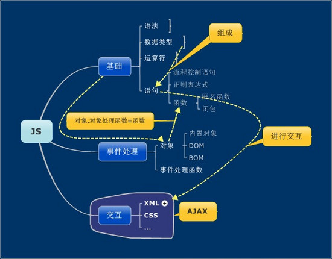
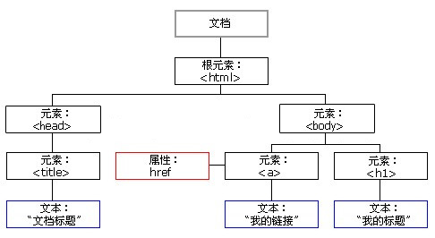

JavaScript一种直译式脚本语言，是一种动态类型、弱类型、基于原型的语言，内置支持类型。 它的解释器被称为JavaScript引擎，为浏览器的一部分，广泛用于客户端的脚本语言。 JavaScript 是一种具有面向对象能力的、解释型的程序设计语言。 更具体一点，它是基于对象和事件驱动并具有相对安全性的客户端脚本语言。 因为他不需要在一个语言环境下运行，而只需要支持它的浏览器即可。 它的主要目的是，验证发往服务器端的数据、增加 Web互动、加强用户体验度等。
下面对JS从整体的角度将JS知识点梳理一下。  以下介绍JS的两个重要的对象：1.DOM对象
HTML DOM 是 W3C 标准（是 HTML 文档对象模型的英文缩写，Document Object Model for HTML）。
HTML DOM定义了用于 HTML 的一系列标准的对象，以及访问和处理 HTML 文档的标准方法。
通过 DOM，可以访问所有的 HTML元素，连同它们所包含的文本和属性。
可以对其中的内容进行修改和删除，同时也可以创建新的元素。
当网页被加载时，浏览器会创建页面的文档对象模型（Document Object Model）。
HTML DOM 模型被构造为对象的树。

2.BOM对象
BOM 也叫浏览器对象模型，它提供了很多对象，用于访问浏览器的功能。
BOM 缺少规范， 每个浏览器提供商又按照自己想法去扩展它， 那么浏览器共有对象就成了事实的标准 。
所以，BOM 本身是没有标准的或者还没有哪个组织去标准它。
BOM对象包括：
1.window 对象。BOM 的核心对象。全局变量是 window 对象的属性，全局函数是 window 对象的 方法。
2.location 对象。提供了与当前窗口中加载的文档有关的信息，还提供了一些导航功能。
3.history 对象。它保存着用户上网的记录，从窗口被打开的那一刻算起。
*JS的作用:
1.读写HTML元素，嵌入动态文本于HTML页面。
2.对浏览器事件做出响应，在数据被提交到服务器之前验证数据。
3.检测访客的浏览器信息。控制cookies，包括创建和修改等。
12个实用的 Javascript 技巧:
1. 取整同时转成数值型：
'10.567890'|0
结果: 10'10.567890'^0
结果: 10-2.23456789|0
结果: -2~~-2.23456789
结果: -22. 日期转数值：
var d = +new Date(); //1295698416792
3. 类数组对象转数组：
var arr = [].slice.call(arguments);
4. 漂亮的随机码：
Math.random().toString(16).substring(2); //14位
Math.random().toString(36).substring(2); //11位
5. 合并数组：
var a = [1,2,3];
var b = [4,5,6];
Array.prototype.push.apply(a, b);
uneval(a); //[1,2,3,4,5,6]
6. 用0补全位数：
function prefixInteger(num, length) {
return (num / Math.pow(10, length)).toFixed(length).substr(2);
}
7. 交换值：
a= [b, b=a][0];
8. 将一个数组插入另一个数组的指定位置：
var a = [1,2,3,7,8,9];
var b = [4,5,6];
var insertIndex = 3;
a.splice.apply(a, Array.concat(insertIndex, 0, b)); // a: 1,2,3,4,5,6,7,8,9
9. 删除数组元素：
var a = [1,2,3,4,5];
a.splice(3,1);
10. 快速取数组最大和最小值
Math.max.apply(Math, [1,2,3]) //3
Math.min.apply(Math, [1,2,3]) //1
11. 条件判断：
var a = b && 1;
相当于
if (b) {
a = 1
}
var a = b || 1;
相当于
if (b) {
a = b;
} else {
a = 1;
}
12. 判断IE:
var ie = /*@cc_on !@*/false;
附言各种JS技巧
1.100个惊人的CSS、JS代码技术2.在b/s开发中经常用到的javaScript技术
3.让微信小程序和页面界面 UI 统一：WeUI 前端样式库（含 Sketch 源文件）
》》欲获得更多内容，请自行百度一下。